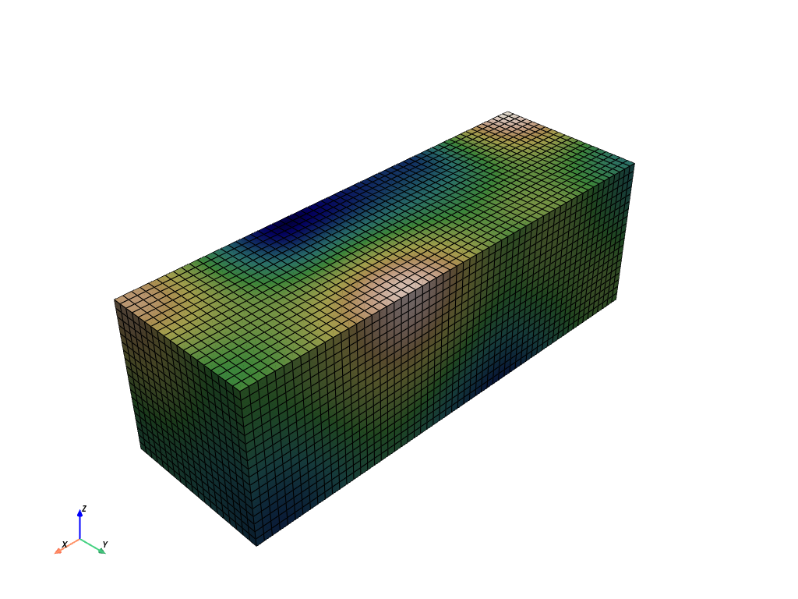
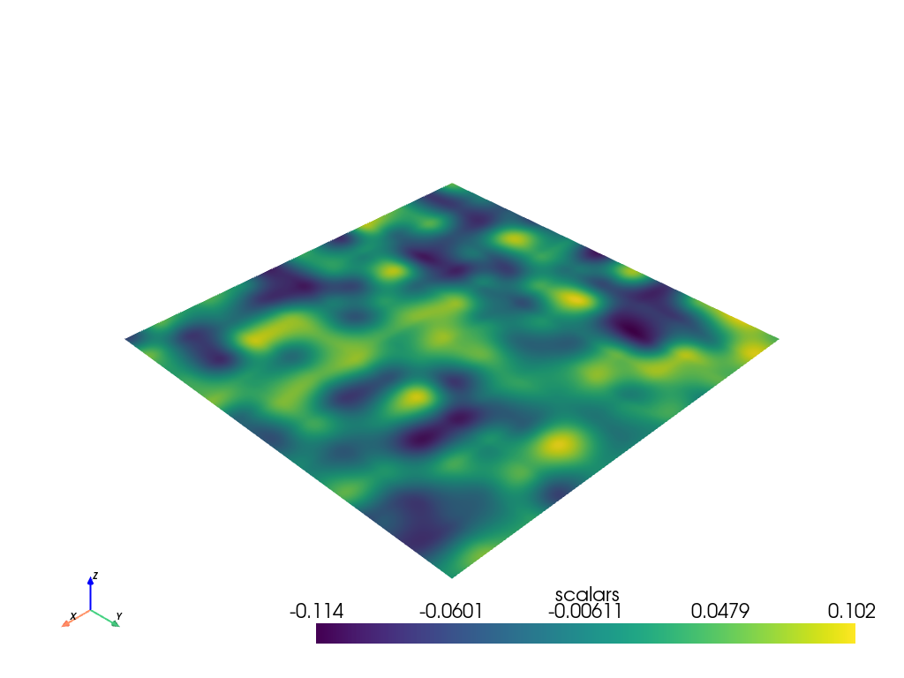

sample_function#
- sample_function(function: vtkmodules.vtkCommonDataModel.vtkImplicitFunction, bounds: typing.Sequence[float] = (-1.0, 1.0, -1.0, 1.0, -1.0, 1.0), dim: typing.Sequence[int] = (50, 50, 50), compute_normals: bool = False, output_type: numpy.dtype = <class 'numpy.float64'>, capping: bool = False, cap_value: float = 1.7976931348623157e+308, scalar_arr_name: str = 'scalars', normal_arr_name: str = 'normals', progress_bar: bool = False)[ソース]#
構造化された点セット上の陰関数をサンプルします。
vtk.vtkSampleFunctionを使用します。このメソッドは，
vtk.vtkStructuredPoints内の各点で陰関数と法線を評価します．ユーザは，サンプリングの次元と空間上の位置を指定することができます．閉曲面を作成するために（vtkContourFilterと組み合わせて）、キャッピングをオンにしてサンプル空間の境界に特定の値を設定することができます。
- パラメータ
- function
vtk.vtkImplicitFunction 評価する暗黙の関数。 例えば、
pyvista.perlin_noise()から生成される関数がこれにあたります。- bounds
length6 sequence 以下の形式で境界を指定します．
(xmin, xmax, ymin, ymax, zmin, zmax)
デフォルトは
(-1.0, 1.0, -1.0, 1.0, -1.0, 1.0)です．- dim
length3 sequence (xdim, ydim, zdim)のフォーマットで表される、サンプリングするデータの次元。 デフォルトは(50, 50, 50)です。- compute_normalsbool,
optional 法線の計算を有効または無効にします。 デフォルトは
Falseです。- output_type
np.dtype,optional 出力スカラー型を設定します．デフォルトは
np.doubleです． 以下のいずれかを指定します．np.float64np.float32np.int64np.uint64np.int32np.uint32np.int16np.uint16np.int8np.uint8
- cappingbool,
optional キャッピングの有効・無効を設定します。 デフォルトは
Falseです。 キャッピングが有効な場合、構造化ポイントセットの外側の境界はキャップ値に設定されます。これは、サーフェスが閉じていることを確認するために使用することができます。- cap_value
float,optional cappingパラメータで使用されるキャッピング値。- scalar_arr_name
str,optional このデータセットのスカラー配列の名前を設定します。 デフォルトは
"scalars"です。- normal_arr_name
str,optional このデータセットの法線配列の名前を設定します。 デフォルトは
"normals"です。- progress_barbool,
optional 進行状況を示す進行状況バーを表示します．デフォルトは
False．
- function
- 戻り値
pyvista.UniformGridサンプリングされたデータによる一様なグリッド。
例
構造化されたグリッド上のパーリンノイズを3Dでサンプルします。
>>> import pyvista >>> noise = pyvista.perlin_noise(0.1, (1, 1, 1), (0, 0, 0)) >>> grid = pyvista.sample_function(noise, [0, 3.0, -0, 1.0, 0, 1.0], ... dim=(60, 20, 20)) >>> grid.plot(cmap='gist_earth_r', show_scalar_bar=False, show_edges=True)
 パーリンノイズを2Dでサンプリングし、プロットします。
>>> noise = pyvista.perlin_noise(0.1, (5, 5, 5), (0, 0, 0)) >>> surf = pyvista.sample_function(noise, dim=(200, 200, 1)) >>> surf.plot()
